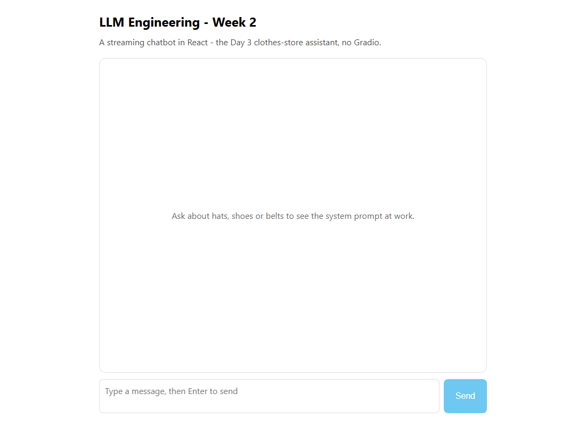

Week 2 · Project Build — Chat App with Tools, Step by Step
Build the Week 2 multimodal chat assistant from scratch in two stacks: a Gradio app with Python + uv, and a streaming React chat app with a Hono API in Node + TypeScript.
Build it yourself · Python + uv and React + Node + TypeScriptYou have spent Week 2 reading and understanding the multimodal chat assistant one day at a time. This page is different: it is a build sheet. From an empty folder, you will assemble the whole thing yourself and get it running, in two separate stacks, so you can pick whichever world you live in.
The assistant you are building is a chat that remembers the conversation (it keeps the
history and replies in context), can call a tool such as get_ticket_price when
the question needs a real answer, and can optionally go multimodal by drawing a picture and
speaking its reply. You will build it twice:
- Track A - Python + uv, with Gradio giving you an instant chat UI in a few lines. This is Ed's track in the course.
- Track B - React + Node + TypeScript: a small streaming chat app of your own, with a
Hono API that runs the same tool loop. This is the verified
project in
week2-ts/.
This page is about steps - what to type, which file to create, and what you should see. It does not re-explain the code; the day pages do that line by line. Build each track against them: Day 3 (the chatbot with history), Day 4 (the tool), and Day 5 (the multimodal extras).
Build it step by step
The runnable Week 2 project lives in the week2-py/ folder and runs fully locally against Ollama, with no paid API keys. Install Ollama first, then:
ollama pull llama3.2
cd week2-py
UV_NATIVE_TLS=1 uv sync
uv run python src/day1_apis.py
uv run python src/day3_chatbot.py
uv run python src/day4_tools.pyThese three scripts run locally against Ollama; day5_multimodal.py is only a note, because image and audio generation are paid cloud-only services.
Track A - Python + uv
Build this inside Ed's course project (the llm_engineering folder you set up in Week 1), so
uv and your .env are already in place. Each step
says what to type and what you should see. For the full code of each piece, read
Day 3, Day 4 and Day 5.
- Dependencies From the project folder, add the packages this assistant needs.
uv addrecords them inpyproject.tomland installs them into the project's environment:
You should see uv resolve and install the packages;uv add gradio openai anthropic python-dotenvgradiois the UI,openaitalks to the model, anthropic is there for the optional Claude experiments from Day 1, andpython-dotenvreads your key from.env. - Create the file Make a new file
app.pyin the project root. Start it with the imports and setup: load.env, create the client, and set the model and a system prompt. This is the same opening you saw on Day 3:
You should be able to runimport os from dotenv import load_dotenv from openai import OpenAI import gradio as gr load_dotenv(override=True) openai = OpenAI() MODEL = "gpt-4o-mini" system_message = "You are a helpful assistant"uv run python app.pynow with no errors (it does nothing yet). - The chat function Add the
chat(message, history)function that rebuilds themessageslist (system prompt, then the prior turns, then the new message) and calls the model. Then wrap it in Gradio's chat UI and launch it:
Rungr.ChatInterface(fn=chat, type="messages").launch()uv run python app.py. Gradio prints a local URL (such ashttp://127.0.0.1:7860) and opens a full chat window in your browser - no HTML written by you. See Day 3 for the exact function body. - Stream the reply Change the function so it passes
stream=Trueandyields the reply as it grows, instead of returning it all at once. Gradio shows the words appearing live, the way a real chat app does. Re-run and watch the typewriter effect. - Add a tool Give the assistant a real skill. Write a plain Python function
get_ticket_price(destination_city), then describe it to the model as a tool - a JSON schema with a name, a description and its parameters - and put that schema in atoolslist. This is the Day 4 material:tools = [{"type": "function", "function": price_function}] - The tool-call loop Pass
tools=toolson the call, and after the model answers, check whether it asked to run the tool. Whilefinish_reason == "tool_calls", run the function, append the result as atoolmessage, and call the model again so it can turn the price into a courteous sentence. This loop is function calling. Re-run and ask "How much is a ticket to London?" - you should see yourTool called for city Londonprint in the terminal, then a natural reply in the chat. - Optional - go multimodal For the Day 5 version, add an
artist()function that callsopenai.images.generate(...)(DALL-E) to draw the destination, and atalker()function that callsopenai.audio.speech.create(...)to speak the reply. Lay out a chat box, an image and an audio player withgr.Blocks()instead ofChatInterface. The exact code is on Day 5. - Run it
uv run python app.pyone last time. You now have a chat that remembers the conversation, looks up a price with a tool, and (if you added Day 5) shows a picture and speaks.
A browser chat window opens automatically. Type a message and the reply streams in word by word. When you
ask about a ticket price, the terminal prints the Tool called for city ... line - proof the
model asked your function to run - and the chat then shows a one-sentence answer that uses the returned price.
- No key. If
.envhas no workingOPENAI_API_KEY, the call fails. The file prints the key prefix on startup; if it says "not set", fix.envfirst. - Running the wrong way. Use
uv run python app.py, not a barepython app.py-uv runis what executes inside the project environment, so the installed packages are found. - Tool never fires. If the assistant answers prices from memory instead of calling the
tool, you forgot to pass
tools=toolson the call, or the system prompt does not nudge it to use the tool.
chat function owns the logic.Track B - React + Node + TypeScript
The second track builds the assistant as a web app you own: a React
chat page talking to a small Hono server, all in
TypeScript. The real, verified project is in
week2-ts/; these steps match its files. The day pages hold the code for
day3_chatbot.ts (Day 3) and day4_tools.ts
(Day 4).
- Scaffold Create the React app with Vite's
React + TypeScript template; it becomes the
web/part of the project. Use Node and npm:
The Vite template gives you the React UI andnpm create vite@latest week2-ts -- --template react-ts cd week2-ts npm init -ytypescript;npm init -ysets up the root package that will also hold the Node scripts and the server. - Dependencies Add the libraries the assistant and server need:
npm add openai @anthropic-ai/sdk hono @hono/node-server dotenv zod markedopenaiand@anthropic-ai/sdkare the model clients,honoplus@hono/node-serverare the web server,dotenvreads your key,zodvalidates the request body, andmarkedrenders the reply as Markdown in the browser. - Dev tool Add tsx, which runs a
TypeScript file directly without a separate build step:
npm add -D tsx - The chatbot core Create
src/day3_chatbot.ts. It exports the chat logic -chat(message, history, system)and a streamingchatStream(...)generator plus aDEFAULT_SYSTEM_MESSAGE- so both the server and any script can reuse it. This is the TypeScript twin of the Day 3 Gradio function; copy it from Day 3. - The tool Create
src/day4_tools.ts. It definesget_ticket_price, the JSON-schemapriceFunctionthat describes it to the model, and achat(openai, message)that runs the full function-calling loop (ask the model; while it wants the tool, run it and ask again). Copy it from Day 4. It was verified offline:getTicketPrice("London")returns$799. - The server Create
server/index.ts. It is a Hono app with two routes that reuse the files above:POST /api/chat- streams the Day 3 reply back to the browser (it wrapschatStreamin Hono'sstreamText).POST /api/price- runs the Day 4 tool loop and returns the final reply as JSON.
OPENAI_API_KEYset, both routes return a clear400error instead of crashing. The server listens on port8788. - The React UI Build the chat page in
web/src/App.tsx: a scrolling message list, a text box, and a Send button. On send itfetches/api/chat, reads the response body with a stream reader, and appends each chunk to the current assistant message so the reply appears live. Assistant text is rendered withmarked. This is the React replacement for Gradio'sChatInterface. - Wire the scripts Put these scripts in the root
package.jsonso you can run each part by name. They come straight from the real project:
The"scripts": { "day1": "tsx src/day1_apis.ts", "day3": "tsx src/day3_chatbot.ts", "day4": "tsx src/day4_tools.ts", "day5": "tsx src/day5_multimodal.ts", "api": "tsx server/index.ts", "web": "vite --config web/vite.config.ts", "typecheck": "tsc --noEmit -p tsconfig.json", "build": "tsc --noEmit -p tsconfig.json && vite build --config web/vite.config.ts" }day*scripts run one lab file with tsx;apistarts the Hono server;webstarts the Vite dev server. - Run it Open two terminals. Start the API in one and the web UI in the other:
Opennpm run api # terminal 1: Hono API on http://localhost:8788 npm run web # terminal 2: Vite dev server on http://localhost:5173http://localhost:5173. The Vite dev server proxies/apicalls through to the Hono server, so the chat page can reach it. Type a message and the reply streams into the page.
At http://localhost:5173 the chat page loads with an empty message list and a text box. Send a
message and your turn appears instantly, followed by the assistant's reply streaming in word by word, rendered
as Markdown. With a valid key set for the API process, the clothes-store assistant from Day 3 answers in
character; without a key the page shows the server's clear 400 error instead of crashing.
- Only one server running. You need both
npm run apiandnpm run web. If the page loads but every message errors, the API (port 8788) is not running. - Key on the wrong process. The key is read by the server (the
apiprocess), not the browser. SetOPENAI_API_KEYin.envbefore startingnpm run api. - Calling the API directly on 5173. The React page calls relative
/api/...paths on purpose, so Vite's proxy forwards them to 8788. Hard-codinglocalhost:5173/apiwithout the proxy, or a different port, breaks the call.
/api/chat; Vite forwards it to Hono, which streams the
model's reply back. The /api/price route works the same way but returns one JSON reply
after the tool loop.
This project type-checks and vite build succeeds, so the code compiles and the bundle is
valid. Like the course labs, it was not run live against the model here (that needs a paid
key), so the screenshot shows the empty UI shell rather than a live conversation. See week2-ts/
for the full project.
What you built
Either way, you now have a working multimodal-capable chat assistant assembled from scratch:
- You built the Week 2 assistant twice: Track A in Python with uv and Gradio, Track B in React + Node + TypeScript with a Hono API.
- Track A is one
app.py:uv add gradio openai anthropic python-dotenv, achatfunction with history and a system prompt,gr.ChatInterface(...).launch(), aget_ticket_pricetool with its loop, and the optional Day 5 image + speech, run withuv run python app.py. - Track B matches
week2-ts/: scaffold with Vite, addopenai @anthropic-ai/sdk hono @hono/node-server dotenv zod markedandtsx, createsrc/day3_chatbot.ts,src/day4_tools.tsandserver/index.ts(Hono with a streaming/api/chatand a tool-loop/api/price), build the chat UI inweb/src/App.tsx, then runnpm run apiandnpm run web. - Both tracks share the same shape: build the
messageslist, call the model, run the tool when the model asks, and stream the reply back to the UI. - The model-calling code is shown as in the course and was not run live here; the TypeScript project type-checks and builds.
- For the full code and the line-by-line explanations, read Day 3, Day 4 and Day 5.